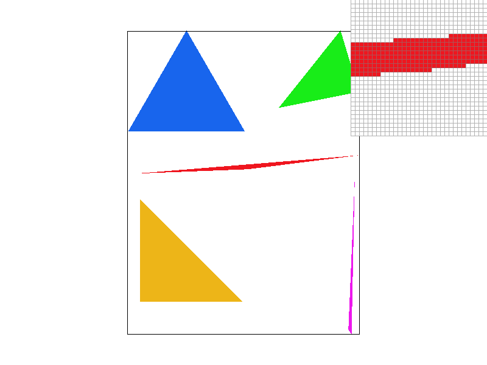
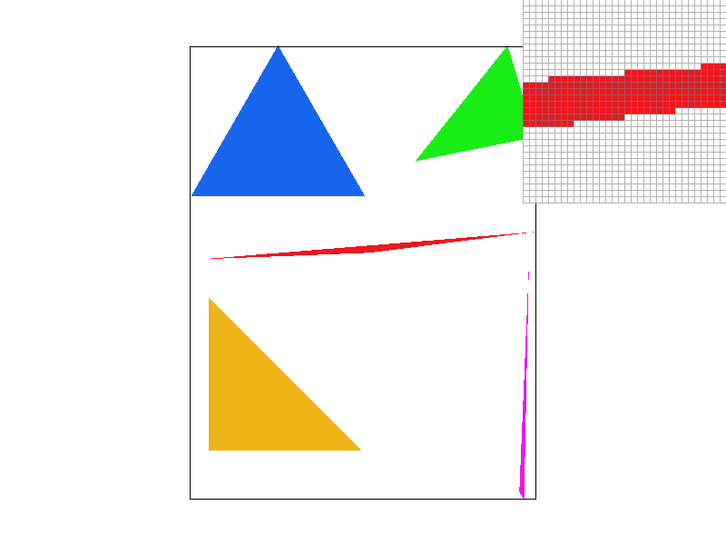
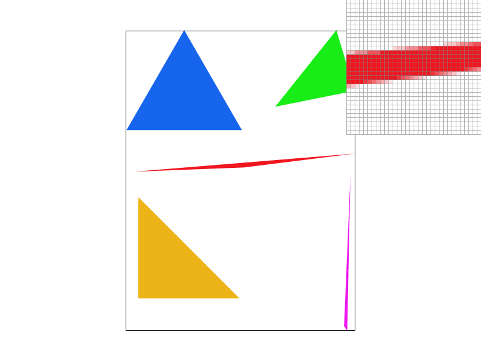
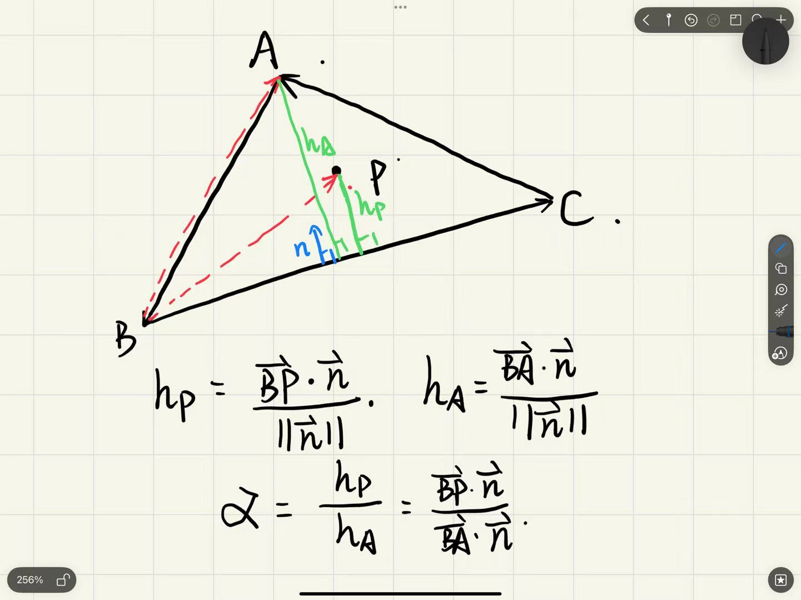
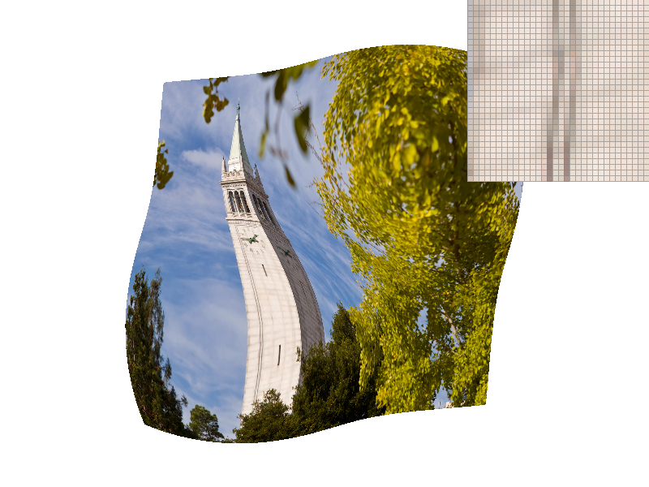
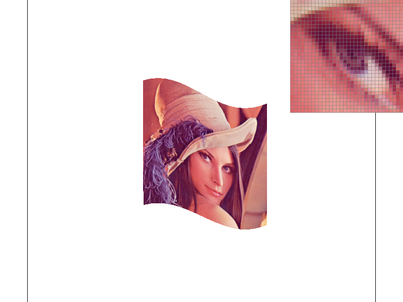

This homework helped me understand the full pipeline of turning continuous geometry into discrete pixels on a screen. Starting from triangle vertices and their attributes, I implemented the key transforms that project a 3D object onto the 2D image plane, and then rasterized the projected triangles onto a pixel grid. Building this from scratch made the “continuous-to-discrete” nature of rendering much more concrete: what we see on the screen is fundamentally the result of sampling, and the sampling strategy directly affects image quality.
A central tool throughout the implementation was barycentric coordinates. By expressing any point inside a triangle as a weighted combination of its three vertices, I was able to consistently interpolate per-vertex quantities such as color and texture coordinates. This not only simplified the code structure, but also clarified why barycentric interpolation is the standard way to estimate values within triangles in real-time graphics.
I also learned how different sampling techniques combat aliasing. By experimenting with multiple samples per pixel and different pixel sampling methods (nearest vs. bilinear), I observed the tradeoff between performance and visual quality, especially along triangle edges where jaggies are most apparent. Finally, I implemented mipmapping and level sampling by estimating how texture coordinates change across screen space and selecting an appropriate mipmap level. This significantly reduced aliasing during minification and improved stability when zooming, highlighting why mipmaps are essential for high-frequency textures.
To rasterize a single-color triangle, I restrict work to the triangle’s axis-aligned bounding box and then test sample points using half-plane edge functions. In addition, I apply a simple tile (sampling-box) optimization: I step through the bounding box in fixed-size tiles and, when an entire tile is guaranteed to lie inside the triangle, I fill the whole tile without doing per-pixel inside tests.
Bounding box. Given triangle vertices (x0, y0), (x1, y1), (x2, y2), I compute:
xmin = floor(min(x0, x1, x2)), xmax = ceil(max(x0, x1, x2)),
ymin = floor(min(y0, y1, y2)), ymax = ceil(max(y0, y1, y2)).
This is the smallest axis-aligned rectangle that contains the triangle, so I only consider pixels (and tiles) whose sample points lie within this region.
Sampling point. For each pixel (x, y), I use pixel-center sampling, i.e., the sample point is p = (x + 0.5, y + 0.5). This matches the spec requirement to test the center of each pixel rather than a corner.
Point-in-triangle test (half-plane tests). For each edge of the triangle, I construct an edge vector and a perpendicular normal (rotated by 90 degrees). For a sample point p, I compute dot products against the three edge normals. To make the test independent of vertex winding (clockwise vs. counterclockwise), I accept the point as inside if either all three tests are non-negative or all three tests are non-positive. This includes samples that fall exactly on the triangle boundary.
Tile optimization. I choose a fixed tile size (e.g., 8×8 pixels) and iterate over tiles in the bounding box. For each tile, I first test the four tile corners with the same half-plane test. If all four corners are inside the triangle (under the same consistent-sign rule), then the entire tile must lie inside the triangle (because the triangle is convex), so I fill every pixel in that tile directly. Otherwise, I fall back to the standard per-pixel (center) point-in-triangle test for pixels in the tile. This optimization reduces the number of per-pixel inside tests when the triangle contains large interior regions.
In the worst case, many tiles intersect triangle boundaries, so the algorithm falls back to performing the same per-pixel point-in-triangle test for every pixel center in the triangle’s bounding box. Therefore, the worst-case asymptotic complexity remains O(N), where N is the number of pixels in the bounding box, matching the baseline approach.
The extra work introduced by the tile optimization is a constant amount per tile (testing four corners). This overhead does not change the asymptotic runtime, and it can only reduce the amount of per-pixel work when tiles are fully inside the triangle. As a result, the method is not asymptotically worse than standard bounding-box triangle rasterization, and it is often faster in practice for large triangles with substantial interior area.

Why supersampling helps.
With sample_rate = 1, each pixel (x, y) is classified using a single sample point (usually the pixel center), so pixels near triangle edges become hard 0/1 decisions, producing jagged “stair-step” aliasing. Supersampling reduces aliasing by taking multiple samples inside each pixel and averaging them, so edge pixels become partial-coverage averages instead of binary decisions.
Subsample grid.
Let N = sample_rate and n = sqrt(N). The subsample location for grid coordinate (i, j) is:
p(i,j) = ( x + (i + 0.5)/n , y + (j + 0.5)/n ),
where 0 ≤ i, j < n.
Supersample buffer layout.
I store per-subsample colors in a 1D array sample_buffer of length W * H * N
(W = width, H = height). Each pixel (x, y) owns a contiguous block of N entries:
base(x,y) = (y * W + x) * N
idx(x,y,s) = base(x,y) + s
For a 2D subsample index (i, j), I flatten it as:
s = j * n + i
Point-in-triangle test.
For each subsample point p, I use the same half-plane (edge function) test as in Part 1 to decide whether p lies inside the triangle (including boundary points). If inside, I write the triangle color to sample_buffer[idx(x,y,s)]; otherwise it remains the cleared background value.
Resolve step (averaging).
After rasterizing, I convert the supersample buffer into the final framebuffer by averaging the N subsamples for each pixel:
C(x,y) = (1/N) * sum_{s=0..N-1} sample_buffer[ base(x,y) + s ]
This averaging is what produces smoother edge transitions when sample_rate increases (1 → 4 → 16).
What I observe in the screenshots.
When sample_rate = 1, thin triangle corners and near-diagonal edges show strong jaggies due to single-sample 0/1 coverage. With sample_rate = 4, edges become noticeably smoother because some pixels near the boundary have partial coverage. With sample_rate = 16, the transition is smoother still, especially in very skinny triangles and sharp corners where the boundary crosses many pixels.
Sample rate = 1x1 
Sample rate = 2x2 
Sample rate = 4x4
For this task, I modified svg/transforms/robot.svg to make the cubeman look like he is cheering. I kept the original SVG structure and relied on hierarchical transforms by updating only the arm group transforms, while leaving the existing translations and scales unchanged.
Concretely, I rotated the left arm group by rotate(45) and the right arm group by rotate(-45). Because each arm is defined inside its own <g> group, applying a rotation at the group level rotates all polygons of that arm together around the group’s local coordinate frame. This demonstrates hierarchical transforms: the final pose results from composing the arm’s local rotation with its parent transforms (translation/scale) in the scene.
The result is that both arms lift diagonally upward, creating a clear “hands-up celebration” pose while preserving the rest of the robot’s body configuration.
What barycentric coordinates mean.
To interpolate values smoothly across a triangle, I use barycentric coordinates. For any point P inside triangle ABC, there exist weights (α, β, γ) such that:
P = αA + βB + γC, with α + β + γ = 1.
These weights describe how much P is “influenced” by each vertex. Near vertex A, α is large; on the edge BC (opposite A), α becomes 0.
Using barycentric weights to interpolate color.
If the triangle vertices have colors Color(A), Color(B), Color(C), then the color at P is computed by the same weighted combination:
Color(P) = α * Color(A) + β * Color(B) + γ * Color(C).
This produces smooth gradients because the weights vary continuously across the triangle.
How I compute one weight using signed heights (projection onto an edge normal).

To compute beta (the weight for vertex A), I treat the opposite edge BC as a reference line. Let n be any normal vector perpendicular to BC (as shown in my sketch).
I measure “signed height” above the line BC by projecting a vector onto n.
Using B as a common origin, the signed height of point P above line BC is:
h_P = (BP · n) / ||n||
and the signed height of vertex A above the same line BC is:
h_A = (BA · n) / ||n||
Because the factor ||n|| cancels in the ratio, α can be computed as a simple height ratio:
beta = h_P / h_A = (BP · n) / (BA · n)
Important detail: BP and BA must be formed from the same origin (B) so both projections measure height relative to the same reference line BC. This makes the ratio consistent.
Computing the other two weights.
I compute β and γ the same way by choosing the opposite edges CA and AB as reference lines, respectively. In practice, once two weights are known, the third can also be obtained by:
γ = 1 - α - β.

Texture mapping as a sampling problem.
A texture image stores colors over texture space (u, v). During rendering, we must assign a color to each screen sample covered by a triangle (the pixel center, or multiple sub-samples when supersampling is enabled). The key idea is inverse mapping: instead of iterating over texels, we iterate over sample points in screen space and map each sample back into texture space to fetch a texture color.
How I implement texture mapping.
For each screen sample point that lies inside a triangle, I first compute its barycentric weights with respect to the triangle vertices. I then use the same weights to interpolate the texture coordinates:
uv(P) = α * uv0 + β * uv1 + γ * uv2, with α + β + γ = 1.
After obtaining the interpolated (u, v) for that sample point, I fetch a texture color using the selected pixel sampling method (nearest or bilinear) and write the result into the supersample buffer. Importantly, I interpolate UV first and then sample the texture once at that UV location, rather than sampling only at the three vertex UVs.
Nearest-neighbor sampling.
Nearest sampling converts the interpolated (u, v) into texture pixel coordinates and picks the single closest texel. This method is very fast (one texel lookup), but it often produces blocky artifacts and strong aliasing when the texture is magnified or when the texture contains high-frequency detail.
Bilinear sampling.
Bilinear sampling also converts (u, v) into texture pixel coordinates, but instead of choosing one texel, it fetches the four neighboring texels around the coordinate and blends them based on the fractional position inside the texel cell. Compared to nearest, bilinear produces smoother transitions and reduces abrupt “pixel stepping.” It does not fully eliminate aliasing under heavy minification (mipmapping is needed for that), but it typically looks noticeably smoother than nearest for the same UV location.
When the difference is largest.
The gap between nearest and bilinear is most visible when:
• the texture is magnified (zoomed in), so single-texel jumps become obvious, or
• the texture has sharp edges / high-frequency patterns (text, checkerboards, thin lines),
because nearest produces discontinuous changes while bilinear blends neighboring texels continuously.
Relationship with supersampling (1 spp vs 16 spp).
Increasing samples per pixel mainly smooths geometric edges by turning hard coverage decisions into partial coverage averages. Pixel sampling (nearest vs bilinear) mainly affects how the texture itself is reconstructed at a given UV. In my screenshots, bilinear tends to look smoother at both 1 spp and 16 spp, while 16 spp additionally reduces jaggies along triangle boundaries.
Observations from the comparison. In the selected region (chosen using the pixel inspector), bilinear sampling preserves smoother transitions across texture features and avoids the blocky stepping that appears with nearest sampling. With 16 spp, triangle edges are also smoother due to better coverage estimation, but the difference between nearest and bilinear remains visible on the texture itself, especially around sharp texture boundaries and fine patterns.
Nearest & Sample rate: 1x1
Bilinear & Sample rate: 1x1
Nearest & Sample rate: 4x4
Bilinear & Sample rate: 4x4
What level sampling is.
Pixel sampling (nearest vs. bilinear) decides how we reconstruct color within a single mip level.
Level sampling decides which mip level to sample from when the texture is scaled on screen. Mipmaps are a prefiltered pyramid of the texture
(level 0 is full resolution, level 1 is downsampled by 2, etc.). The goal is to reduce aliasing during minification by sampling from a level whose texel footprint better matches a screen pixel’s footprint.
How I estimate the mip level (get_level).
In RasterizerImp::rasterize_textured_triangle, for each screen sample point P = (x, y) inside the triangle, I compute barycentric weights and interpolate:
• uv at P, stored as sp.p_uv
• uv_dx at (x + 1, y), stored as sp.p_dx_uv
• uv_dy at (x, y + 1), stored as sp.p_dy_uv
Inside Texture::get_level, I form finite differences to approximate derivatives:
du/dx, dv/dx from (sp.p_dx_uv - sp.p_uv)
du/dy, dv/dy from (sp.p_dy_uv - sp.p_uv)
I then scale these UV differentials into texel space using the full-resolution texture size (width, height) and compute the footprint magnitude:
Lx = sqrt( (du/dx * width)^2 + (dv/dx * height)^2 )
Ly = sqrt( (du/dy * width)^2 + (dv/dy * height)^2 )
L = max(Lx, Ly)
Finally, the continuous mip level is:
level = log2(L)
and I clamp it to the valid range [0, max_level].
How I sample levels (Texture::sample).
My Texture::sample supports three level sampling modes (controlled by the GUI toggle):
• L_ZERO: always sample from level 0 (no mipmapping), identical to Part 5 behavior.
• L_NEAREST: round the computed continuous level to the nearest integer and sample only that mip level.
• L_LINEAR: sample from the two adjacent mip levels (floor(level) and ceil(level)) and linearly blend them by the fractional part.
After choosing the mip level(s), I apply the selected pixel sampling method:
P_NEAREST uses sample_nearest(uv, level), and
P_LINEAR uses sample_bilinear(uv, level).
Why L_ZERO and L_NEAREST look similar when zooming in.
When the texture is magnified, the estimated footprint L is < 1, so log2(L) becomes negative and the level clamps to 0. In that case, both L_ZERO and L_NEAREST end up sampling level 0, so they appear nearly identical. The differences between level sampling modes become most visible during minification (zooming out) and in high-frequency textures.
Tradeoffs: speed, memory, and antialiasing power.
• Pixel sampling (nearest vs. bilinear): affects local smoothness inside one mip level; bilinear costs more texture fetches but reduces “blocky stepping.”
• Level sampling (mipmaps): greatly reduces minification aliasing; building/storing mipmaps increases memory usage (~33% extra), and L_LINEAR costs extra sampling (two levels).
• Samples per pixel (supersampling): increases cost roughly proportional to sample rate, improves geometric edge antialiasing and helps a bit with texture aliasing, but mipmaps are still the key tool for heavy minification.
Observations from my comparisons.
With a high-frequency png texture, L_ZERO tends to show shimmering/moire patterns when zooming out because it samples only level 0. L_NEAREST reduces aliasing but can introduce “popping” when the chosen mip level changes discretely. L_LINEAR smooths the transition between levels by blending adjacent mipmaps, improving temporal stability during zooming.
P_NEAREST & L_ZERO
P_LINEAR & L_ZERO
P_NEAREST & L_NEAREST
P_LINEAR & L_NEAREST